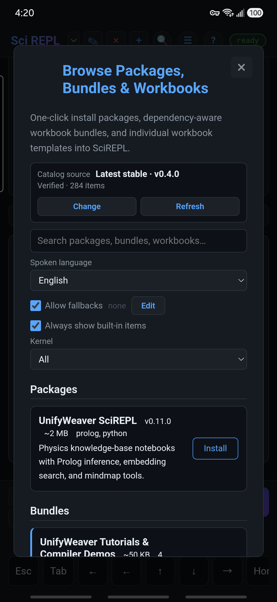
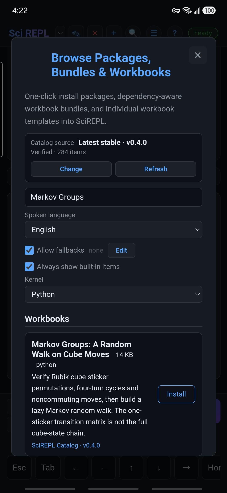
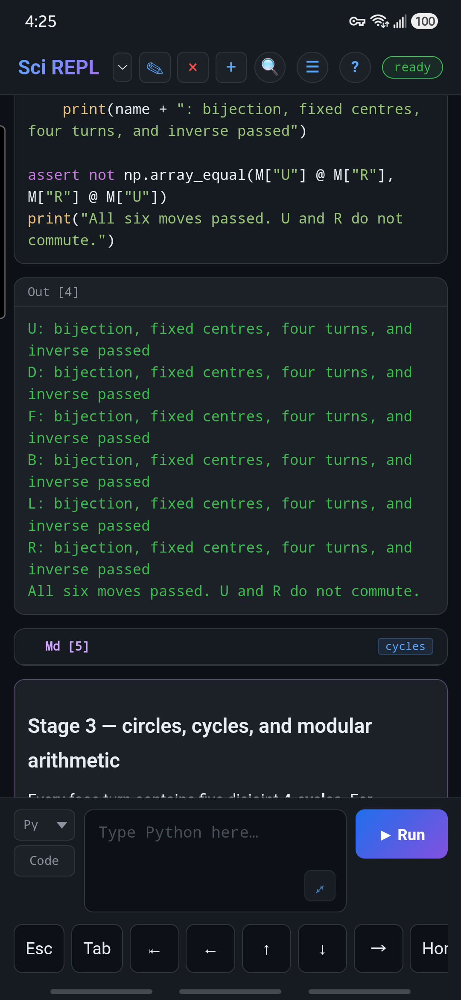
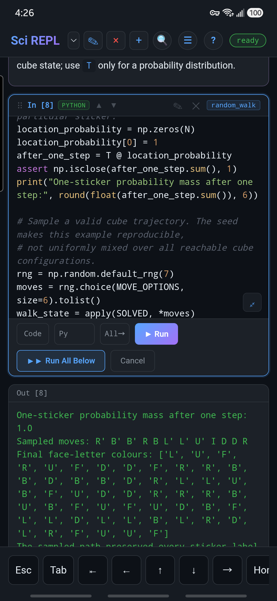
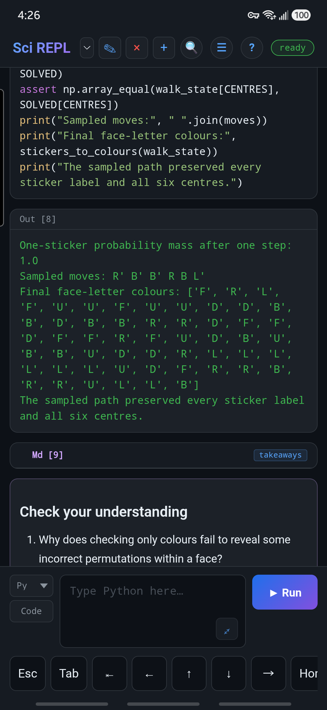
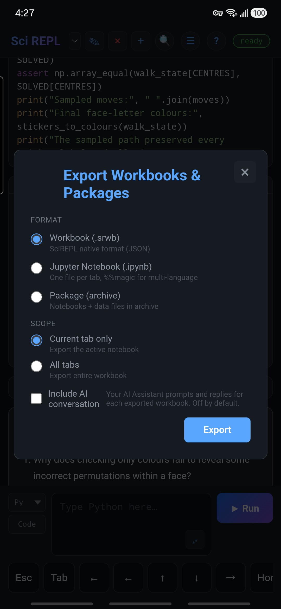
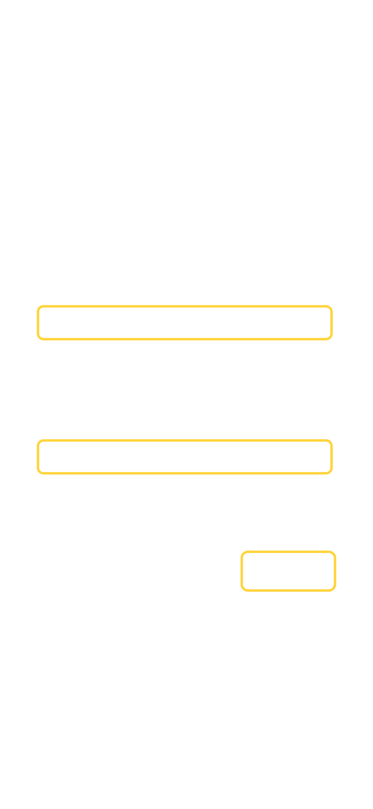
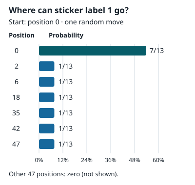

Lernen durch Ausprobieren
Ein Workbook aus dem Katalog erkunden
Finden Sie das vorhandene Workbook Markov Groups: A Random Walk on Cube Moves, führen Sie dessen vier Python-Zellen aus, verkürzen Sie den Random Walk und speichern Sie Ihre eigene Kopie. Der Schwerpunkt liegt auf der Nutzung von SciREPL; Sie müssen weder Matrixalgebra beherrschen noch einen Zauberwürfel lösen können.
Möchten Sie die App kennenlernen? Folgen Sie den Schritten 1–5: Workbook finden, öffnen, ausführen, bearbeiten und exportieren. Nach Schritt 5 können Sie aufhören. Die optionale Mathematik folgt danach; sie ist für diesen Leitfaden nicht erforderlich.
Echte Smartphone-Screenshots zeigen SciREPL Pro 1.4.0-debug auf einem Samsung Galaxy S24+, aufgenommen am . Sie veranschaulichen den gemeinsamen Workbook-Ablauf, nicht ein veröffentlichtes Pro-Build. Free und andere Versionen ordnen manche Bedienelemente möglicherweise anders an. Das Beispiel ist das englische Workbook aus dem SciREPL-Katalog v0.4.0.
Schritt 1
Durchsuchen, filtern und suchen
- Öffnen Sie Menü → Pakete, Bündel & Arbeitsmappen durchsuchen. In Free öffnet das optionale Kopfzeilen-Kürzel 📦 denselben Bildschirm, wenn es sichtbar ist. Der Erscheinungsbild-Leitfaden zeigt, wie man es aktiviert.
- Durchsuchen Sie die Liste oder nutzen Sie deren Filter. Wählen Sie für dieses englische Beispiel English unter Gesprochene Sprache sowie Python unter Kernel. Alle gesprochenen Sprachen und die Kernel-Option Alle funktionieren ebenfalls, zeigen aber mehr Einträge an.

- Geben Sie Markov Groups in das Suchfeld ein. Suchen Sie unter Arbeitsmappen nach Markov Groups: A Random Walk on Cube Moves. Prüfen Sie vor der Installation den vollständigen Titel: Dies ist eine Arbeitsbuch-Vorlage und kein Paket, das zu Python hinzugefügt werden soll.
- Falls die Tastatur das Ergebnis verdeckt, verwenden Sie deren Schaltfläche zum Ausblenden der Tastatur oder drücken Sie einmal Android Zurück, um sie zu schließen. Lassen Sie Browse geöffnet und scrollen Sie zum passenden Arbeitsbuch.

Was ist noch verfügbar? Durchsuchen Sie die Arbeitsbuchliste auf GitHub (Englisch). Sprachausgaben einer Lektion sind separate Einträge, keine unterschiedlichen Lektionen.
Der Link zu GitHub zeigt die neuesten Entwicklungsinhalte. SciREPL verwendet normalerweise die neueste stabile Katalogversion, daher erscheinen manche auf GitHub gezeigten Arbeitsbücher möglicherweise noch nicht in Browse. Löschen Sie in SciREPL die Suche und versuchen Sie CSV, Prolog, Lua oder statistics; wählen Sie Alle unter Kernel, wenn Sie andere Sprachen erkunden.
Falls ein Datenschutzhinweis angezeigt wird: Das Abrufen oder Aktualisieren des Remote-Katalogs erfordert eine Netzwerkverbindung. Lesen Sie den Hinweis, scrollen Sie innerhalb des Dialogs ganz nach unten und tippen Sie nur dann auf I Understand, wenn Sie einverstanden sind. Das Schließen des Hinweises verhindert diese Netzwerkaktualisierung; integrierte Einträge und zuvor zwischengespeicherte Katalogeinträge werden möglicherweise weiterhin angezeigt. Siehe Datenschutz und lokale Daten (Englische Referenzseite).
Kein passendes Arbeitsbuch? Überprüfen Sie die Sprach- und Kernel-Filter und verwenden Sie dann das Bedienelement Aktualisieren des Katalogs. Eine ältere App verfügt möglicherweise nicht über dieselben Katalog-Bedienelemente. Alternativ können Sie die angeheftete v0.4.0-Arbeitsbuchdatei auf Ihrem Gerät speichern, anschließend Menü → Datei importieren wählen und markov-groups.srwb auswählen. Wenn Ihr Browser die Datei als Text anzeigt, nutzen Sie dessen Speichern-/Herunterladen-Funktion und behalten Sie die Dateiendung .srwb bei. Die Schritt-für-Schritt-Anleitung zum manuellen Importieren von Arbeitsbüchern zeigt die Schritte anhand von Simpsons Paradoxon von GitHub aus dem Branch main; wählen Sie die obige Markov-Datei, um diese Lektion fortzusetzen.
Schritt 2
Das Arbeitsbuch öffnen und seine Zellen untersuchen
- Tippen Sie auf der Arbeitsbuch-Karte auf Installieren. Wenn auf der Schaltfläche bereits Installiert steht, verlassen Sie das Browse-Menü und wählen Sie stattdessen das vorhandene Arbeitsbuch aus der Arbeitsbuch-Auswahl.
- Das Arbeitsbuch wird normalerweise zum ausgewählten Tab. Falls das Browse-Menü geöffnet bleibt, verlassen Sie es. Wenn das automatische Wechseln deaktiviert ist, wählen Sie Markov Groups: A Random Walk on Cube Moves aus dem Arbeitsmappenauswahl neben SciREPL in der Kopfzeile.
- Lesen Sie den einleitenden Text und scrollen Sie dann durch die Zellen. Markdown-Zellen erklären die Lektion; Python-Zellen enthalten den Code, den Sie ausführen werden. Jede Python-Zelle hat einen Namen, damit Sie sie leichter finden.
Installieren bedeutet nicht Ausführen. Durch die Installation dieser Remote-Katalog-Arbeitsmappe werden ihre Zellen hinzugefügt, ohne ihren Python-Code auszuführen. Die Vorlage v0.4.0 enthält keine gespeicherten Python-Ausgaben; prüfen Sie den Code daher und führen Sie ihn selbst aus. Es ist kein KI-Konto, kein API-Schlüssel, kein externer Datensatz und keine zusätzliche Paketinstallation erforderlich; der Code verwendet NumPy mit SciREPLs Python-Laufzeitumgebung.
Schritt 3
Die vier Python-Zellen der Reihe nach ausführen
Tippen Sie bei einer gespeicherten Zelle auf den ✎ Stift in der Kopfzeile dieser Zelle und tippen Sie dann auf das zelleneigene Ausführen. Dadurch wird die vorhandene Zelle ausgeführt; das untere Feld für neue Zellen erstellt eine andere Zelle.
Was bedeuten diese Namen? cube_moves und check_moves sind Namen, die auf den Zellen angezeigt werden, keine einzugebenden Befehle. Suchen Sie den passenden Namen und verwenden Sie dann den Stift und Ausführen dieser Zelle. Das Tutorial zu benannten Zellen und sprachübergreifenden Pfaden zeigt, wie man Namen zuweist und sie als Verweise wie etwa /nb/cube_moves/.code verwendet.
- Führen Sie
cube_movesaus. Dies definiert die Züge und Hilfsfunktionen. Erwarten SieBuilt six clockwise quarter-turn matrices with fixed face centres. - Führen Sie
check_movesaus. Dies prüft, dass kein Sticker verloren geht, die Mitten fixiert bleiben und vier Wiederholungen jeder Vierteldrehung zum Ausgangszustand zurückkehren. Erwarten Sie nach sechs bestandenen ZeilenAll six moves passed. U and R do not commute.

check_moves, keine aus dem Katalog mitgelieferten gespeicherten Ergebnisse.- Führen Sie
show_turnaus. Dies gibt die U-Drehungs-Zyklen und Sticker-Beschriftungen vor und nach einer Drehung aus. Die vordere obere Reihe ändert sich von[19, 20, 21]zu[46, 47, 48]. Der VergleichU then R equals R then U: Falsezeigt, dass die Reihenfolge der Züge eine Rolle spielt.
Teil der gedruckten Ausgabe:
U cycles, shown as one-based sticker positions:
1 -> 3 -> 9 -> 7 -> 1
2 -> 6 -> 8 -> 4 -> 2
19 -> 37 -> 28 -> 46 -> 19
20 -> 38 -> 29 -> 47 -> 20
21 -> 39 -> 30 -> 48 -> 21
F top row labels before U: [19, 20, 21]
F top row labels after U: [46, 47, 48]
U then R equals R then U: FalseDie lange Liste der Flächenbuchstaben ist hier weggelassen. Die Zykluszeilen verwenden einsbasierte Positionen; der Zeilenvergleich zeigt Sticker-Beschriftungen. Dies sind unterschiedliche Bedeutungen, auch wenn der gelöste Zauberwürfel ihnen anfangs übereinstimmende Zahlen zuweist.
- Führen Sie
random_walkaus. Dies gibt eine Gesamtwahrscheinlichkeit für einen einzelnen Sticker von1.0, einen Stichprobenpfad mit 12 Schritten, abschließende Flächenbuchstaben-Beschriftungen sowie eine Meldung aus, die bestätigt, dass jede Sticker-Beschriftung und alle sechs Mitten erhalten blieben.
Die Python-Zellen befinden sich bereits in der erforderlichen Reihenfolge. Ordnen Sie sie nicht um: Spätere Zellen verwenden Definitionen aus cube_moves wieder. Um mehrere Zellen gleichzeitig auszuführen, siehe Run All Below und Run All Cells.
Erster Durchlauf langsamer? Python benötigt möglicherweise Zeit zum Initialisieren, und ein Runtime-Download oder ein Netzwerk-Fallback erfordert eventuell Ihre Zustimmung. Warten Sie, bis das Status-Badge zu fertig zurückkehrt, und prüfen Sie die Ausgabe der Zelle auf Fehler. Wenn eine spätere Zelle nach einem Neustart einen nicht definierten Namen meldet, führen Sie die Python-Zellen von Anfang an aus; gespeicherte Ausgaben sind nicht dasselbe wie aktive Python-Definitionen.
Dieses Arbeitsbuch gibt Text und Seitenflächen-Buchstabenlisten aus. Es zeichnet oder animiert keinen Würfel, und sein mit einem Seed versehener kurzer Pfad ist kein Beleg für eine gleichmäßig gemischte Verdrehung.
Schritt 4
Den Pfad verkürzen und die gespeicherte Zelle erneut ausführen
- Suchen Sie
random_walkund tippen Sie auf dessen ✎ Bleistift. - Suchen Sie diese Zeile und ändern Sie nur
size=12insize=6:moves = rng.choice(MOVE_OPTIONS, size=12).tolist()Lassen Sie
np.random.default_rng(7)unverändert. Der Seed macht dieses Beispiel reproduzierbar. - Tippen Sie auf die Schaltfläche Ausführen im Editor dieser gespeicherten Zelle. Die Ausgabe wird aktualisiert; die Zeile
Sampled moves:enthält nun sechs Optionen statt zwölf.Izählt als Option, auch wenn der Würfel dadurch stillsteht.


Führen Sie für diese Änderung nur random_walk erneut aus, während die früheren Definitionen geladen sind. Wenn Sie stattdessen cube_moves bearbeiten, führen Sie auch die späteren Python-Zellen erneut aus. Ausgaben zeichnen ihre letzte Ausführung auf; sie werden nicht automatisch neu berechnet, wenn sich eine andere Zelle ändert.
Wenn Sie den Editor versehentlich geöffnet haben, wählen Sie Abbrechen. Um zum ursprünglichen Beispiel zurückzukehren, ändern Sie size=6 wieder zu size=12 und führen Sie die Zelle erneut aus.
Schritt 5
Eigene Arbeitsbuch-Kopie exportieren
- Lassen Sie das Arbeitsbuch Markov Groups ausgewählt und öffnen Sie dann Menü → Arbeitsmappen & Pakete exportieren, nicht Dokument exportieren.
- Wählen Sie Arbeitsmappe (.srwb) und Nur aktuelle Registerkarte.
- Tippen Sie auf Exportieren und speichern Sie die Kopie an einem Ort, den Sie kontrollieren. Android öffnet einen Ablauf zum Teilen oder Speichern; ein Browser lädt eine Datei herunter. Behalten Sie die Dateiendung
.srwbbei.


Das Arbeitsbuch benötigt keine separate Datendatei, daher reicht eine .srwb-Kopie für diese Lektion aus. Sie können es über Menü → Datei importieren wieder öffnen; führen Sie dessen Python-Zellen von Anfang an aus, wenn Sie eine frische Runtime starten.
Die lokale Wiederherstellung ist kein Backup. Das Leeren des App-/Website-Speichers oder eine Deinstallation kann lokale Arbeiten entfernen. Android- und Browser-Sitzungen teilen Ihre Bearbeitungen nicht automatisch. Der Export veröffentlicht Ihre Änderungen nicht im Katalog; er gibt Ihnen eine separate Kopie.
Zu den Grundlagen der Bearbeitung gespeicherter Zellen siehe die Einführung in die Benutzeroberfläche des ersten Arbeitsbuchs. Für ein Beispiel, das eine separate Datendatei einliest und mitführt, probieren Sie die CSV-Arbeitsbuch-Einführung. Die Arbeitsbuch-Referenz (Englische Referenzseite) behandelt Zelltypen und stabile Zellnamen.
Sie haben die Einführung in SciREPL abgeschlossen. Sie haben ein Arbeitsbuch gefunden, geöffnet, ausgeführt, bearbeitet und exportiert. Wenn Sie lediglich die App kennenlernen wollten, können Sie hier aufhören. Fahren Sie unten fort, wenn Sie die Mathematik des Würfels und das Entwicklungs-Arbeitsbuch erkunden möchten.
Optionale Lektüre
Die Mathematik hinter dem Würfelbeispiel
Etwas Bedeutung hinter der Ausgabe
Das Arbeitsbuch verfolgt 54 einzeln beschriftete Aufkleber, nicht nur sechs Farben. Ein gültiger Zug ordnet diese Beschriftungen neu an. Vier Wiederholungen einer Vierteldrehung kehren zur Ausgangsanordnung zurück, aber Drehungen verschiedener Seiten können unterschiedliche Ergebnisse liefern, wenn sich ihre Reihenfolge ändert.
Der Random Walk wählt zwischen 13 Optionen: stehen bleiben (I), sechs Vierteldrehungen und deren sechs Umkehrungen. Seine 54×54-Wahrscheinlichkeitsmatrix beschreibt die Position eines Aufklebers, nicht jede vollständige Würfelkonfiguration. Eine Gesamtwahrscheinlichkeit von 1.0 bedeutet, dass sich die Positionswahrscheinlichkeiten dieses Aufklebers zu eins summieren; dies beweist nicht, dass der Würfel gleichmäßig gemischt ist.
Neugierig auf die Ausrichtung der Seiten? Die Zelle coordinates des Arbeitsbuchs liefert die globalen Achsen sowie die Rechts-, Aufwärts- und Außennormale jeder Seite. Das Tutorial zu Bildern, Diagrammen und Gleichungen zeigt, wie man solche Erklärungen in ein Arbeitsbuch einbindet. Koordinatendiagramme werden der Entwicklungskopie des Katalogs hinzugefügt; die oben angeheftete Kopie v0.4.0 enthält sie nicht.
Optional: Vorschau auf die überarbeitete Stufe 4
Die Schritte und Telefon-Screenshots oben verwenden das stabile Arbeitsbuch v0.4.0. Der Download des überarbeiteten Arbeitsbuchs ist eine Entwicklungsvorschau und noch nicht der stabile Katalog. Importieren Sie es über Menü → Import File, wenn Sie die kürzeren, verschachtelten Erklärungs- und Codezellen ausprobieren möchten.
Führen Sie in dieser Vorschau wie oben zuerst cube_moves, check_moves und show_turn aus. Danach:
- Führen Sie
transition_matrixaus. Es erstelltT, die Wahrscheinlichkeitsmatrix für die Position eines Aufklebers nach einer gleichmäßig ausgewählten Option:I, einer Vierteldrehung einer Seite oder deren Umkehrung. - Führen Sie
sticker_stepaus. Es verfolgt die Aufkleber-Beschriftung 1, anfänglich an der nullbasierten Position 0. Seine Positionswahrscheinlichkeiten summieren sich zu1.0. Das Diagramm unten zeigt die von dieser Zelle berechneten Zielwahrscheinlichkeiten.

after_one_step = T @ location_probability berechnet; es handelt sich nicht um einen Smartphone-Screenshot oder eine neue vom Arbeitsbuch erzeugte Ausgabe. Positionen sind nullbasiert. Die anderen 47 Positionen haben die Wahrscheinlichkeit null und werden weggelassen. Die Bezeichnung des Aufklebers bleibt 1.| Zielposition | Wahrscheinlichkeit |
|---|---|
| 0 | 7/13 ≈ 53.85% |
| 2, 6, 18, 35, 42, 47 (jeweils) | 1/13 ≈ 7.69% |
| Alle anderen 47 Positionen | 0 |
- Führen Sie
random_walkaus. Es zieht eine Stichprobe eines 12-Optionen-Pfads für den gesamten Würfel unter Verwendung der Definitionen austransition_matrix. Dies unterscheidet sich von den obigen Ein-Aufkleber-Wahrscheinlichkeiten. Die Bearbeitung aus Schritt 4size=12funktioniert in dieser Zelle in beiden Editionen.